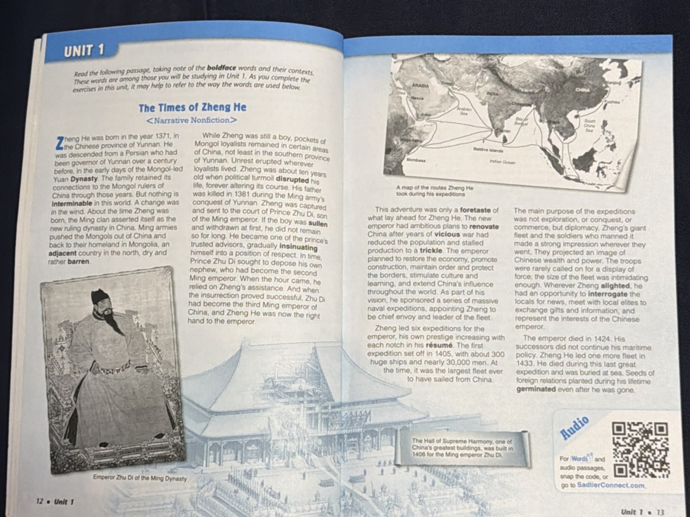

Sadlier Unit 1: The Times of Zheng He
Meet Zheng He, the Ming admiral whose enormous diplomatic fleets carried China’s influence across the seas—and learn all 16 Unit 1 words in context.
Full episode
6:08 · Story, knowledge, and vocabulary
Words in This Episode
3:08 · Slow vocabulary review
Words in this episode
- interminable
- seeming to have no end“The long wait at the airport felt interminable.”
- adjacent
- next to or very near something“Our classroom is adjacent to the library.”
- barren
- dry and empty, where almost nothing can grow“The desert was barren and hot.”
- disrupt
- to break up or throw into confusion; to interrupt“The fire drill disrupted our test.”
- sullen
- gloomy and silent, in a bad mood“He was sullen after his team lost.”
- insinuate
- to slowly and cleverly work your way into a place or a group“She insinuated herself into the club by being extra friendly.”
- foretaste
- a small sample of what is coming later“The movie trailer was a foretaste of the film.”
- renovate
- to repair something old and make it new again“They renovated the old library last summer.”
- vicious
- cruel and violent“The vicious dog barked at everyone.”
- trickle
- a slow, thin flow of liquid“Water came out of the broken faucet in a trickle.”
- prestige
- respect and admiration earned by success“Winning the science prize brought her great prestige.”
- résumé
- a short written list of your jobs, skills, and achievements“He sent his résumé to three companies.”
- intimidating
- frightening; making people feel nervous“The big exam was intimidating.”
- alight
- to step down from or land on something“The bird alighted on the fence.”
- interrogate
- to ask someone a lot of serious questions“The detective interrogated the witness for an hour.”
- germinate
- to begin to grow, like a seed sprouting“The bean seeds germinated in the warm soil.”
Original text
The Times of Zheng He
<Narrative Nonfiction>
(Sadlier Unit 1 reading passage — transcribed from textbook photo; boldface words are the Unit 1 vocabulary)
Zheng He was born in the year 1371, in the Chinese province of Yunnan. He was descended from a Persian who had been governor of Yunnan over a century before, in the early days of the Mongol-led Yuan Dynasty. The family retained its connections to the Mongol rulers of China through those years. But nothing is interminable in this world. A change was in the wind. About the time Zheng He was born, the Ming clan asserted itself as the new ruling dynasty in China. Ming armies pushed the Mongols out of China and back to their homeland in Mongolia, an adjacent country in the north, dry and rather barren.
While Zheng He was still a boy, pockets of Mongol loyalists remained in certain areas of China, not least in the southern province of Yunnan. Unrest erupted wherever loyalists lived. Zheng He was about ten years old when political turmoil disrupted his life, forever altering its course. His father was killed in 1381 during the Ming army's conquest of Yunnan. Zheng He was captured and sent to the court of Prince Zhu Di, son of the Ming emperor. If the boy was sullen and withdrawn at first, he did not remain so for long. He became one of the prince's trusted advisors, gradually insinuating himself into a position of respect. In time, Prince Zhu Di sought to depose his own nephew, who had become the second Ming emperor. When the hour came, he relied on Zheng He's assistance. And when the insurrection proved successful, Zhu Di had become the third Ming emperor of China, and Zheng He was now the right hand to the emperor.
This adventure was only a foretaste of what lay ahead for Zheng He. The new emperor had ambitious plans to renovate China after years of vicious war had reduced the population and stalled production to a trickle. The emperor planned to restore the economy, promote construction, maintain order and protect the borders, stimulate culture and learning, and extend China's influence throughout the world. As part of his vision, he sponsored a series of massive naval expeditions, appointing Zheng He to be chief envoy and leader of the fleet.
Zheng He led six expeditions for the emperor, his own prestige increasing with each notch in his résumé. The first expedition set off in 1405, with about 300 huge ships and nearly 30,000 men. At the time, it was the largest fleet ever to have sailed from China.
The main purpose of the expeditions was not exploration, or conquest, or commerce, but diplomacy. Zheng He's giant fleet and the soldiers who manned it made a strong impression wherever they went. They projected an image of Chinese wealth and power. The troops were rarely called on for a display of force; the size of the fleet was intimidating enough. Wherever Zheng He alighted, he had an opportunity to interrogate the locals for news, meet with local elites to exchange gifts and information, and represent the interests of the Chinese emperor.
The emperor died in 1424. His successors did not continue his maritime policy. Zheng He did one more fleet in 1433. He died during this last great expedition and was buried at sea. Seeds of foreign relations planted during his lifetime germinated even after he was gone.
Boldface words (16): interminable, adjacent, barren, disrupted, sullen, insinuating, foretaste, renovate, vicious, trickle, prestige, résumé, intimidating, alighted, interrogate, germinated.
Original reading passage · Sadlier Vocabulary Workshop, Unit 1
3-question quiz
The word barren most nearly means:
- dry and empty
- full of flowers
- deep and wide
- soft and warm
Check answer
dry and empty
If a meeting feels interminable, it feels:
- super short
- like it will never end
- really exciting
- very loud
Check answer
like it will never end
To renovate an old house means to:
- knock it down
- repair it and make it new again
- paint it a funny color
- move it to a new street
Check answer
repair it and make it new again